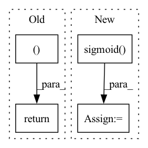

Pattern ID :2142

Before Change
layer_output = torch.stack(output_inner, dim=int(self.batch_first))
last_state_list = torch.stack(last_state_list, dim=0)
return layer_output, last_state_list
def reset_parameters(self):
for c in self.cell_list:
c.reset_parameters()
After Change
// Update gate of the GRU.
update_gate_conv = layers.SNConv2D(
num_channels, self._kernel_size, sn_eps=self._sn_eps)
update_gate = F.sigmoid(update_gate_conv(xh))
// Gate the inputs.
gated_input = torch.cat([x, read_gate * prev_state], dim=1)
// Gate the cell and state / outputs.
output_conv = layers.SNConv2D(
num_channels, self._kernel_size, sn_eps=self._sn_eps)
c = F.relu(output_conv(gated_input))
out = update_gate * prev_state + (1. - update_gate) * c
new_state = out
return out, new_state
In pattern: SUPERPATTERN
Frequency: 5
Non-data size: 4
Instances
Fragment ID: 9211534
Project Name: openclimatefix/skillful_nowcasting
Commit Name: 94b4812a28104192d6f14fa06317cf1a73e732e4
Time: 2021-11-08
Author: jacob@bieker.tech
File Name: nowcasting_gan/layers/ConvGRU.py
M Class Name: ConvGRU
N Class Name: ConvGRU
M Method Name: forward(3)
N Method Name: forward(3)
M Parent Class: torch.nn.Module
N Parent Class: nn.Module
M File Name: nowcasting_gan/layers/ConvGRU.py
N File Name: nowcasting_gan/layers/ConvGRU.py
M Start Line: 196
M End Line: 221
N Start Line: 31
N End Line: 54
'>
Before Change
return None, masks, related_preds
class GraphLayerGradCam(ca.LayerGradCam):
After Change
if kwargs.get("edge_masks"):
edge_masks = kwargs.pop("edge_masks")
hard_edge_masks = [self.control_sparsity(mask, kwargs.get("sparsity")).sigmoid() for mask in edge_masks]
else:
// --- setting GradCAM ---
class model_node(nn.Module):
'>
Fragment ID: 9211528
Project Name: divelab/dig
Commit Name: 1094bb655b4d8f08e5342ea7f78a1dd25ea6a423
Time: 2021-09-27
Author: 1161283769@qq.com
File Name: dig/xgraph/method/gradcam.py
M Class Name: GradCAM
N Class Name: GradCAM
M Method Name: forward(3)
N Method Name: forward(3)
M Parent Class: WalkBase
N Parent Class: WalkBase
M File Name: dig/xgraph/method/gradcam.py
N File Name: dig/xgraph/method/gradcam.py
M Start Line: 94
M End Line: 118
N Start Line: 80
N End Line: 125
'>
Before Change
related_preds = self.eval_related_pred(x, edge_index, masks, **kwargs)
return None, masks, related_preds
After Change
score_mask = (mask[self_loop_edge_index[0]] + mask[self_loop_edge_index[1]]) / 2
edge_masks.append(score_mask.detach())
mask = self.control_sparsity(score_mask, kwargs.get("sparsity"))
mask = mask.sigmoid()
hard_edge_masks.append(mask.detach())
// Store related predictions for further evaluation.
'>
Fragment ID: 9211529
Project Name: divelab/dig
Commit Name: 1094bb655b4d8f08e5342ea7f78a1dd25ea6a423
Time: 2021-09-27
Author: 1161283769@qq.com
File Name: dig/xgraph/method/deeplift.py
M Class Name: DeepLIFT
N Class Name: DeepLIFT
M Method Name: forward(3)
N Method Name: forward(3)
M Parent Class: WalkBase
N Parent Class: WalkBase
M File Name: dig/xgraph/method/deeplift.py
N File Name: dig/xgraph/method/deeplift.py
M Start Line: 80
M End Line: 105
N Start Line: 55
N End Line: 108
'>
Before Change
// v_sem_h = self.__dropout(v_sem_h, .8, "v_sem_h")
// v_syn_h = self.__dropout(v_syn_h, .8, "v_syn_h")
sem_syn_h = self.__dropout(sem_syn_h, .8, "sem_syn_h")
h = torch.cat((h, sem_syn_h), dim=1)
return torch.relu(self.merge4(h))
// v_sem_h = (torch.relu(self.v_sem_fc(v_sem_h)) * v_syn_h) + (beta1 * v_sem_h)
// v_syn_h = (torch.relu(self.v_syn_fc(v_syn_h)) * v_sem_h) + ((1-beta1) * v_syn_h)
After Change
def __adaptive_merge(self, rnn_h, v_attn, v_sem_h, v_syn_h, sem_syn_h):
h = torch.cat((rnn_h, v_attn), dim=1)
beta1 = torch.sigmoid(self.merge1(h))
beta2 = torch.sigmoid(self.merge2(h))
aa1 = beta1 * v_sem_h + (1 - beta1) * v_syn_h
return beta2 * aa1 + (1 - beta2) * sem_syn_h
def forward_fn(self, v_pool, s_pool, pos_emb, enc_hidden, v_feats, captions, teacher_forcing_ratio=0.5):
'>
Fragment ID: 9211531
Project Name: jssprz/visual_syntactic_embedding_video_captioning
Commit Name: 08bb3aae9ddc9fd1d5affa73c3fd11db7cad6bd5
Time: 2021-03-05
Author: jperezmartin90@gmail.com
File Name: model/decoder.py
M Class Name: SemSynCNDecoder
N Class Name: SemSynCNDecoder
M Method Name: __adaptive_merge(6)
N Method Name: __adaptive_merge(6)
M Parent Class: nn.Module
N Parent Class: nn.Module
M File Name: model/decoder.py
N File Name: model/decoder.py
M Start Line: 349
M End Line: 360
N Start Line: 420
N End Line: 424
'>
Before Change
scores.append(np.array(batch_scores))
if query_info is not None:
return boxes, classes, scores, query_info
else:
return boxes, classes, scores
After Change
bs, *_ = out["pred_logits"].shape
// Get probabilities from output logits and select query with highest prob
pred_probs = out["pred_logits"].sigmoid().squeeze().reshape(bs, 20, 27)
pred_boxes = out["pred_boxes"].reshape(bs, 20, 27, -1)
pred_query_ids = pred_probs.argmax(dim=-1)
// Adjust format to fit metric
boxes = []
classes = []
scores = []
for batch in range(bs):
batch_boxes = []
batch_classes = []
batch_scores = []
for class_ in range(20):
valid_id = pred_query_ids[batch, class_]
batch_boxes.append(pred_boxes[batch, class_, valid_id][None].detach().cpu().numpy())
batch_scores.append(pred_probs[batch, class_, valid_id].detach().cpu().numpy())
batch_classes.append(class_ + 1)
'>
Fragment ID: 9211524
Project Name: bwittmann/transoar
Commit Name: 09f57bf9bd1146b57db0cce80a0901defe5e5d63
Time: 2022-02-15
Author: bastian.wittmann@tum.de
File Name: transoar/inference.py
M Class Name: AnonimousClass
N Class Name: AnonimousClass
M Method Name: inference(2)
N Method Name: inference(2)
M Parent Class:
N Parent Class:
M File Name: transoar/inference.py
N File Name: transoar/inference.py
M Start Line: 9
M End Line: 36
N Start Line: 6
N End Line: 34